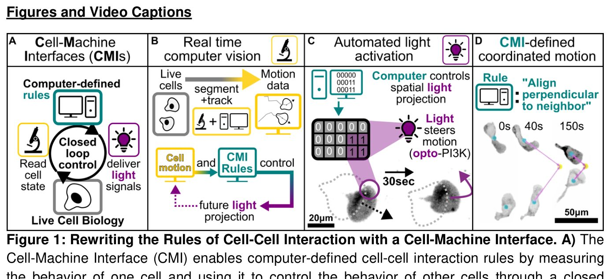
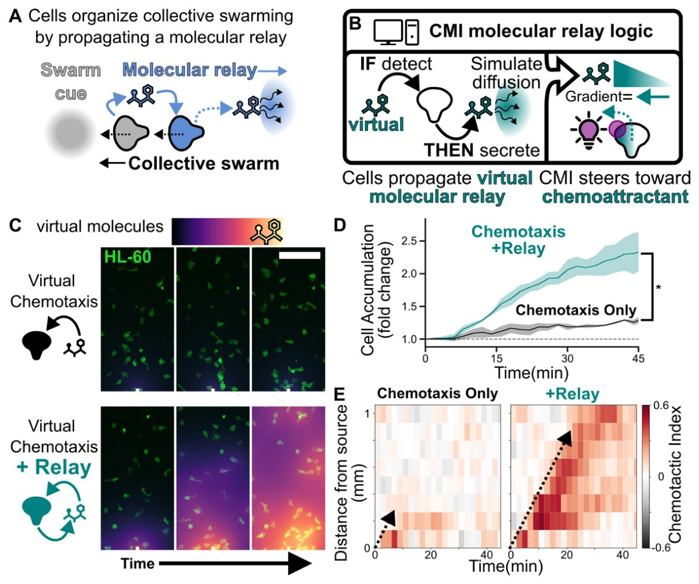
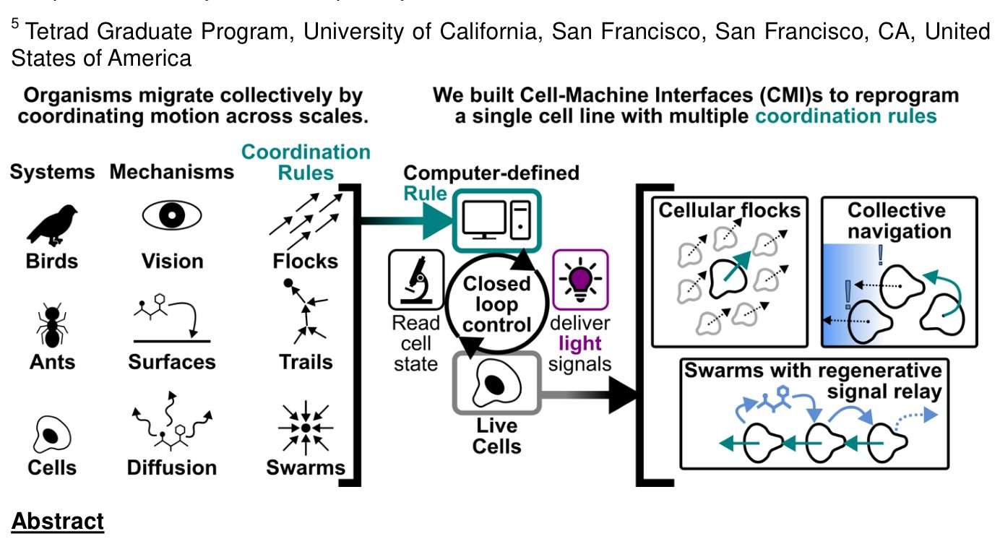

Hujayralar yorugʻlik algoritmlari yordamida toʻda boʻlib harakatlanishga oʻrgatildi


Qushlar qanday qilib osmonda toʻsatdan yoʻnalishni oʻzgartirib, bir-biriga urilmay uchadi? Murakkab jamoaviy tartib har doim alohida aʼzolarning oddiy aloqa qoidalariga asoslanadi. Yangi tadqiqotda olimlar kompyuter va tirik hujayralarni oʻzaro bogʻlovchi tizim yaratdilar. Kamera hujayralar harakatini kuzatadi, dastur esa yorugʻlik nurlari bilan ularning yoʻnalishini toʻgʻrilab, qushlar galasi kabi birdam harakatlanishni taʼminlaydi.
Asosiysi
- Kompyuter koʻrishi va opto-PI3K yordamida hujayralar harakati real vaqtda boshqarildi
- HL-60 leykotsitlari qushlar galasi kabi yaqin qoʻshnilariga qarab saf tortishga oʻrgatildi
- Jamoaviy boshqaruv fMLP gradientiga qarab harakatlanish samarasini ikki baravar oshirdi
Batafsil
Sintetik biologiyada hujayralararo aloqa qoidalarini qayta dasturlash odatda oylarga choʻziladigan genetik modifikatsiyalarni talab qiladi. Tadqiqotchilar bu muammoni bartaraf etish uchun kompyuter koʻrishi va yopiq zanjirli optogenetik boshqaruvga asoslangan «hujayra-mashina» interfeysini (cell-machine interface, CMI) ishlab chiqdilar. Tajribada neytrofillarga oʻxshash HL-60 hujayra liniyasidan foydalanildi; ularning harakat yoʻnalishi yorugʻlikka sezgir fosfoinozitid-3-kinaza (opto-PI3K) fermenti orqali boshqarildi.
Dasturiy taʼminot real vaqt rejimida qoʻshni hujayralar trayektoriyasini tahlil qilib, ularni qushlar galasi modeliga koʻra eng yaqin yettita qoʻshnisining oʻrtacha yoʻnalishiga moslashtirdi. Natijada odatda tarqoq harakatlanuvchi leykotsitlar oʻz-oʻzidan tartibga tushib, butun guruh boʻlib bir yoʻnalishda siljiy boshladi. Shuningdek, fotofaollashuvchi fMLP peptidi gradientida ushbu algoritm yordamida guruhning umumiy xemotaksis koʻrsatkichi nazorat guruhiga nisbatan ikki baravardan koʻproqqa oshdi.
Cheklovlar
Tadqiqot HL-60 hujayra modelida in vitro sharoitida bajarilgan va bioRxiv serveridagi ushbu preprint hali taqrizdan oʻtmagan.
Maqolaning batafsil tahlili
Annotatsiya
Qushlar va hasharotlarda kuzatiladigan kollektiv harakat guruhlarga alohida individlar uddalay olmaydigan vazifalarni bajarish imkonini beradi. Bunday xulq-atvor mahalliy oʻzaro taʼsirlar natijasida yuzaga keladi, biroq hujayra darajasida bu jarayonlarni tashkil etuvchi qoidalar eksperimental nazoratning qiyinligi sababli yetarlicha oʻrganilmagan. Ushbu ishda mualliflar real vaqt rejimida kollektiv migratsiya qoidalarini belgilash imkonini beruvchi «hujayra-mashina» interfeysini yaratdilar.
Izoh
«Hujayra-mashina» interfeysi — bu tirik hujayralar xulq-atvorini yopiq konturda boshqarish uchun kompyuter koʻrish tizimi va optogenetikani (yorugʻlik yordamida hujayra faoliyatini boshqarish) birlashtiruvchi tizim.
Tadqiqotchilar genetik modifikatsiyalangan yagona hujayra liniyasidan foydalandilar, unda hujayralararo oʻzaro taʼsir qoidalari dasturiy taʼminot orqali belgilandi va teskari aloqaga ega optogenetik boshqaruv orqali amalga oshirildi. Bu hujayralarga podalarga oʻz-oʻzidan tashkillanish, immun hujayralari toʻdasining oʻzaro taʼsir mantiqini takrorlovchi regenerativ signallarni tarqatish va alohida hujayralar aniqlay olmaydigan signal molekulalari gradientlarini kollektiv tarzda yengib oʻtish imkonini berdi.
Muhim
Hujayralararo oddiy oʻzaro taʼsir qoidalarini oʻzgartirish tizimning alohida elementlari uchun imkonsiz boʻlgan yangi kollektiv qobiliyatlarni yaratishga imkon beradi.
Ish shuni koʻrsatadiki, oʻzaro taʼsirning asosiy tamoyillarini modifikatsiya qilish murakkab guruh funksiyalarining paydo boʻlishi uchun yetarlidir. Taklif etilgan yondashuv koʻp hujayrali tizimlarning muvofiqlashuv tamoyillarini oʻrganish va belgilangan xususiyatlarga ega sintetik kollektivlarni loyihalash uchun eksperimental baza yaratadi.
Ehtiyot bo'ling
Tadqiqot in vitro hujayra liniyalarida oʻtkazilgan; natijalar xulq-atvorni boshqarishning fundamental imkoniyatini koʻrsatadi, ammo qoʻshimcha tekshiruvlarsiz murakkab organizmlarga toʻgʻridan-toʻgʻri tatbiq etilishi mumkin emas.
Kirish
Kollektiv migratsiya va sintetik biologiya
Kollektiv migratsiya guruhlarga individual tarzda erishib boʻlmaydigan vazifalarni bajarish imkonini beradi. Bunga qushlarning yirtqichlardan qochish uchun harakatini muvofiqlashtirishi, chumolilarning oziq-ovqat izlash uchun feromon izlarini mustahkamlashi, shuningdek, immun hujayralarining migratsiyasi va jarohatlarning bitishi misol boʻla oladi. Kuzatuvlar, axborot tashuvchilarga taʼsir oʻtkazish va matematik modellashtirish orqali olimlar mahalliy oʻzaro taʼsirlar qanday qilib populyatsiya miqyosidagi harakatni keltirib chiqarishini oʻrganishgan. Biroq, turli tizimlar oʻrtasidagi umumiy tamoyillarni tushunish qiyinligicha qolmoqda. Mualliflar hujayralararo oʻzaro taʼsir qoidalarini sintetik qayta dasturlash orqali yangi yondashuvni taklif qilishdi.
Muhim
Mualliflar hujayralar migratsiyasini boshqarishning sintetik usulini ishlab chiqdilar, bunda biologik signallar dasturiy taʼminot bilan almashtiriladi, bu esa hujayralarni genetik qayta qurmasdan turib oʻzaro taʼsir mantiqini tezda oʻzgartirish imkonini beradi.
Sintetik biologiya tizim mantiqini noldan qurish orqali uni tushunishni tekshirishga imkon beradi. Ilgari bu yondashuv biologik ossilyatorlar, hujayra holatining oʻzgarishi va koʻp hujayrali tuzilmalarni shakllantirishni oʻrganishda qoʻllanilgan. Mualliflar kollektiv migratsiyani dasturlash mumkin boʻlgan jarayonga aylantirishni maqsad qilishdi. Anʼanaviy usullar har bir tajriba uchun yangi genetik konstruksiyalarni yaratishni talab qiladi, bu esa oylar davom etishi mumkin. Yangi yondashuv teskari aloqali optogenetik boshqaruvdan foydalanadi, bunda «kirish-chiqish» qoidalari dasturiy kod bilan belgilanadi, bu esa iteratsiyalar orasidagi vaqtni daqiqalargacha qisqartiradi.
Izoh
Optogenetika — yorugʻlik yordamida hujayralar faoliyatini boshqarish usuli boʻlib, unda yorugʻlikka sezgir oqsillar hujayra jarayonlarini faollashtiradi yoki susaytiradi.
Boshqaruv tizimi arxitekturasi (CMI)
Oʻzaro taʼsir qoidalarini qayta yozish uchun mualliflar CMI (Cell-Machine Interface) tizimini yaratdilar. U uchta komponentdan iborat: hujayra holatini oʻqish (kompyuter koʻrish tizimi), xulq-atvorni boshqarish (subhujayraviy optogenetika) va ular oʻrtasidagi kirish-chiqish munosabatini belgilovchi yopiq kontur (Rasm 1A). Tizim oʻtgan hujayra xatti-harakatlarini belgilangan algoritm boʻyicha kelgusi optogenetik stimulyatsiya bilan bogʻlaydi (Rasm 1B). Ijro mexanizmi sifatida fosfoinozitid-3-kinazaning (opto-PI3K) optogenetik faollashuvi qoʻllanildi (Rasm 1C, Rasm SN 1).
Ehtiyot bo'ling
Tadqiqot hujayra modellarida oʻtkazilgan; boshqaruv tamoyillarini murakkab organizmlarga koʻchirish qoʻshimcha tekshiruvlarni talab qiladi.
CMI tizimi hujayralarga qushlar kabi toʻdalanish (Rasm 2, Rasm SN 2–4), navigatsiya vazifalarini birgalikda hal qilish (Rasm 3, Rasm SN 5) va neytrofillar kabi toʻda boʻlib harakat qilish (Rasm 4, Rasm SN 6–7) imkonini berdi. Birinchi sinov sifatida ikki hujayraning toʻqnashuvini dasturlash amalga oshirildi. Har bir hujayrani qoʻshnisining harakatiga perpendikulyar yoʻnaltiruvchi qoida hujayralarning tezligi va trayektoriyasini bir-biriga moslashtirishiga olib keldi (Rasm 1D, Rasm SN 1). Bu kollektiv xulq-atvor kompyuter interfeysi orqali amalga oshirilgan mahalliy qoidalar asosida yuzaga kelishi mumkinligini va hujayra xatti-harakati bilan boshqaruv algoritmi oʻrtasida oʻzaro bogʻliqlik borligini isbotlaydi.

Rasmning to'liq tavsifi
2-rasm: Qushlar to‘dasining harakat qoidalari migratsiyadagi hujayralarning jamoaviy o‘zini o‘zi tashkil etishini belgilaydi. Biz tirik hujayralarni qushlar to‘dasining klassik qoidalari asosida o‘zaro ta’sir qilish uchun qayta dasturlashga harakat qildik. A) Qushlar to‘dasining harakati individlar o‘z harakatini yetti nafar eng yaqin qo‘shnisi bilan moslashtirganda yuzaga keladi deb hisoblanadi. B) Ushbu qoidani CMI yordamida amalga oshirish odatda muvofiqlashtirilmagan neytrofilsimon HL-60 hujayralarining (chapda) to‘dalarga (o‘rtada, o‘ngda) o‘zini o‘zi tashkil etishiga olib keldi. C) 7 ta qo‘shnidan iborat to‘da uchun CMI qoidasi faollashguncha (uzuq chiziqdan chapda) va undan keyin simulyatsiya qilingan (qora chiziq) va eksperimental (havorang nuqtalar) populyatsiyalarning vaqt o‘tishi bilan o‘rtacha polyarizatsiyasi. D) Qushlar to‘dasining simulyatsiyalarida har bir individ o‘z harakatini o‘rtacha hisoblaydigan qo‘shnilar soni jamoaviy xulq-atvorni boshqaradigan asosiy parametrdir. Bu parametrni tirik qushlarda manipulyatsiya qilish qiyin, ammo CMI yordamida tirik hujayralarda tez va aniq o‘zgartirilishi mumkin, bu esa polyarizatsiyaning kutilgan miqdoriy o‘zgarishlariga olib keladi. B panelida trek segmentlari harakat burchagiga qarab rang bilan kodlangan, masshtab chizig‘i — 100 mkm, barcha tasvirlar bir xil masshtabda. Kulrang strelkalar C panelidagi tegishli vaqt nuqtalariga ishora qiladi. C dagi xatoliklar simulyatsiya natijalari bo‘yicha umumiy polyarizatsiyaning o‘rtacha standart xatosini (SEM) ifodalaydi, shtrixlangan hudud — burchak tezligi parametrining bir standart og‘ishiga (+/-) teng simulyatsiya (usul tafsilotlariga qarang).

Rasmning to'liq tavsifi
3-rasm: Global muvofiqlashtirish jamoaviy xemotaktik yo‘nalishni kuchaytiradi. Keyinchalik biz muvofiqlashtirish hujayra jamoalariga real biologik muammolarni hal qilish imkonini beradimi yoki yo‘qligini tekshirdik. A) HL-60 hujayralari xemotaktik gradientlarni sezadi va ularga sezilarli ko‘p hujayrali muvofiqlashtirishsiz alohida individlar kabi javob beradi (yuqori panel). Biz hujayralarni populyatsiyaning o‘rtacha harakat vektoriga yo‘naltirish uchun global muvofiqlashtirish qoidasini kiritdik (pastki panel). B) Gradientlarni alohida individlar kabi talqin qiladigan hujayralar faqat manba yaqinida xemotraktantlar bo‘yicha tekislanishi mumkin (yuqori panel). Biz sintetik tarzda muvofiqlashtirilgan hujayralar o‘z sezgirlik diapazonini kengaytiradi deb taxmin qildik (pastki panel). C) CMI orqali harakatni global muvofiqlashtirish (pastda) ushbu muvofiqlashtirishga ega bo‘lmagan hujayralarga nisbatan gradientni yaxshiroq idrok etishni ta’minlaydi (tepada); har ikki hujayra guruhi bir xil ko‘rish maydonida, ammo CMI faqat pastki hujayralarda faollashtirilgan. D) Uchta biologik takrorlash bo‘yicha vaqt o‘tishi bilan o‘rtacha xemotaktik indeks +/- SEM. Vertikal chiziqlar mos ravishda xemotaktik gradient va CMI qoidasining boshlanishini bildiradi. CMI yordamida hujayralarning global muvofiqlashuvi populyatsiya uchun gradientni idrok etishni sezilarli darajada yaxshilaydi. E) Xemotaktik gradientning chap chetidan masofaga qarab o‘rtacha xemotaktik indeks. CMI xemotraktant manbasiga yaqin va uzoq joyda gradient bo‘yicha yuqori tekislanishga olib keldi, CMI bo‘lmagan hujayralar esa manbadan uzoqda zaif tekislanishga ega edi. Ma’lumotlar D dagi plato bo‘yicha (45-60 daqiqa) 3 ta biologik takrorlash bo‘yicha +/- SEM bilan guruhlangan. C dagi masshtab chizig‘i — 500 mkm.


Rasmning to'liq tavsifi
4-rasm: Sintetik signal relelari uzoq masofalarda jalb qilishni kuchaytirish uchun yo‘naltiruvchi ma’lumotlarni tarqatadi. Bizning oldingi tajribamizda (3-rasm) hujayralar global miqyosda muvofiqlashgan edi. Bu yerda biz neytrofillar to‘dalanishi qoidalaridan ilhomlangan mahalliyroq muvofiqlashtirishni sinab ko‘ramiz. A) Neytrofillar to‘dalanishi paytida shikastlanish va infeksiya joylariga yetib kelgan kashshof hujayralar ikkilamchi xemotraktantni chiqarish orqali qo‘shimcha hujayralarni jalb qiladi. Bu signal yaqin atrofdagi hujayralarni o‘ziga tortadi va ularni o‘zlari ham xemotraktant ajratishga undaydi, bu esa tez tarqaladigan o‘z-o‘zini kuchaytiruvchi signal releini hosil qiladi. B) Biz tirik hujayralarda virtual xemotaksis va rele qoidalarini amalga oshirish uchun CMI dan foydalandik. Kompyuter virtual xemotraktantning ishlab chiqarilishi va diffuziyasini simulyatsiya qiladi, tirik hujayralar esa CMI boshqaradigan migratsiya orqali yuzaga keladigan gradientlarni sezadi va ularga javob beradi. Yetarli miqdordagi virtual xemotraktant ta’siriga uchragan hujayralar ikkilamchi manbalarga aylanib, regenerativ rele hosil qiladi. C) Faqat xemotaksis qoidasidan foydalanadigan hujayralar (tepada) bilan solishtirganda, rele qoidasi bilan ham dasturlangan populyatsiyalar (pastda) virtual xemotraktant to‘lqinini butun ko‘rish maydoni bo‘ylab tarqatdi. D) Rele hujayralarning maqsadga jalb qilinishini sezilarli darajada kuchaytirdi. E) Yo‘naltiruvchi ma’lumotlar hujayradan hujayraga uzatilganligi sababli, bu tabiiy neytrofil to‘dalarida kuzatilganidek, hujayralarning maqsad bo‘yicha tekislanish to‘lqinining tarqalishiga olib keladi (uzuq strelka, o‘ngda). Rele bo‘lmagan hujayralar faqat maqsad yaqinida tekislanadi. C dagi masshtab chizig‘i — 200 mkm, tasvirlar taxminan 8, 16 va 30-daqiqalarga to‘g‘ri keladi. D da shtrixlangan hudud uchta texnik takrorlash bo‘yicha boshlang‘ich zichlikdan o‘rtacha o‘zgarish +/- SEM. Student t-testi: p=0,03.
Hujayralarning jamoaviy xulq-atvorini dasturlash
Tadqiqotchilar qushlar galasining xulq-atvor qoidalarini HL60 neytrofilsimon hujayralariga tatbiq etishdi. Tabiatda qushlar o‘z harakatini yetti nafar eng yaqin qo‘shnisiga moslashtiradi. HL60 hujayralari ko‘ra olmagani uchun olimlar mikroskop va kompyuter yordamida qo‘shnilar harakatini kuzatuvchi va optogenetik PI3K faollashuvi orqali hujayra harakatini yo‘naltiruvchi kompyuter interfeysidan (CMI) foydalanishdi (Rasm 2A). Tashqi boshqaruvsiz HL60 hujayralari tartibsiz harakatlanadi (Rasm 2B-C, chapda). Yetti qo‘shni qoidasi joriy etilganda, hujayralar o‘z-o‘zidan gala hosil qilib, birgalikda yo‘nalishni o‘zgartira boshladi (Rasm 2B-C, markaz-o‘ngda), bu esa populyatsiya polyarizatsiyasining ortishiga olib keldi (Rasm 2C).
Muhim
«Yetti qo‘shni» algoritmidan foydalanish HL60 hujayralariga gala xulq-atvorini taqlid qilish va populyatsiya polyarizatsiyasini sezilarli darajada oshirish imkonini berdi.
Izoh
CMI (Cell-Machine Interface) — hujayralar xulq-atvorini real vaqt rejimida boshqarish uchun mikroskopiya, kompyuter kuzatuvi va optogenetikani birlashtiruvchi tizim.
Ehtiyot bo'ling
Tadqiqot in vitro HL60 hujayra liniyasida o‘tkazilgan; bu mexanizmlarning tirik organizmlarga ko‘chirilishi qo‘shimcha tekshiruvlarni talab qiladi.
Modellashtirish va o‘zaro ta’sir parametrlarini sozlash
O‘zaro ta’sirning jamoaviy xulq-atvorga ta’sirini tekshirish uchun mualliflar HL60 migratsiya tezligi, rotatsion diffuziya va optogenetik boshqaruvga javob parametrlariga moslashtirilgan agentga asoslangan model yaratishdi. Model qo‘shnilar sonining ikkitagacha kamayishi polyarizatsiyani pasaytirishi, o‘ntagacha ortishi esa uni kuchaytirishini bashorat qildi (Rasm 2D). Tirik hujayralardagi tajribalar ushbu bashoratlarni tasdiqladi (Rasm 2D, Rasm SN). Ushbu yondashuv biologik tizimni o‘zgartirmasdan, dasturiy ta’minot orqali o‘zaro ta’sir parametrlarini moslashuvchan o‘zgartirish va nazariy modellarni real hujayralar xulq-atvori bilan solishtirish imkonini beradi.
Jamoaviy xemotaksis va navigatsiya
Olimlar hujayralar jamoasi navigatsiya vazifalarini yakka tartibdagi hujayralarga qaraganda samaraliroq hal qila olishini tekshirishdi. Odatda HL60 hujayralari fMLP peptidi gradientiga faqat manba yaqinida javob beradi. Ushbu cheklovni yengish uchun CMI tizimi joriy etildi, bunda har bir hujayra o‘z harakatini butun populyatsiyaning o‘rtacha vektoriga moslashtiradi (Rasm 3A). Bu gradient ta’sirida bo‘lgan hujayralarga yo‘nalish haqidagi ma’lumotni qolganlarga uzatish imkonini beradi (Rasm 3B). Fotoaktivlanuvchi fMLP analogi yordamida gradient yaratilganda, CMI faollashtirilgan populyatsiyalar nazorat guruhiga nisbatan sezilarli darajada yuqori xemotaksis indeksini ko‘rsatdi (Rasm 3C-D). Tajriba yakunida CMI guruhidagi xemotaksis indeksi nazorat guruhidagidan ikki barobar yuqori bo‘ldi va fMLP manbasidan uzoqda ham yuqori darajada qoldi (Rasm 3E).
Muhim
CMI orqali muvofiqlashtirish hujayralarga fMLP gradienti bo‘ylab samarali harakatlanish imkonini berdi, xemotaksis indeksi nazorat darajasidan 2 barobar yuqori bo‘ldi.
Hujayralar jamoalarida kimyoviy signalizatsiyani modellashtirish
Oldingi tajribalarda (Rasm 3) harakat yoʻnalishi haqidagi maʼlumot butun populyatsiyaga bir zumda uzatilgan edi. Tabiiy sharoitda hujayralararo aloqa makon va vaqt bilan cheklangan, masalan, signal molekulalarining diffuziyasi orqali. Neytrofillar toʻdalanishida (swarming) shikastlangan joyga yetib borgan birinchi hujayralar LTB4 lipidini ajratadi. Bu ligand nafaqat boshqa hujayralarni jalb qiladi, balki ularni ham LTB4 ishlab chiqarishga undaydi va oʻz-oʻzini kuchaytiruvchi rele toʻlqinini hosil qiladi (Rasm 4A). Biz foydalanayotgan HL60 hujayralari odatda toʻdalanish xususiyatiga ega emas, shuning uchun biz ularni kompyuter vositasidagi oʻzaro taʼsir (CMI) orqali qayta dasturlashga harakat qildik. Tizim real vaqt rejimida virtual signal molekulalarining diffuziyasini hisoblaydi, optogenetik stimulyatsiya esa hujayralarni gradient boʻylab harakatlanishga majbur qiladi.
Izoh
CMI (computer-mediated interaction) — kompyuter hujayralar xatti-harakatini kuzatib, optogenetika yordamida ularning migratsiyasini boshqaradigan va sunʼiy muhit yaratadigan usul.
Avval biz hujayralarga virtual xemotraktant gradienti boʻylab yuqoriga harakatlanish imkonini beruvchi CMI qoidasini joriy qildik. Tizim har bir hujayra uchun lokal gradientni hisoblaydi va migratsiyani boshqarish uchun opto-PI3Kdan foydalanadi (Rasm 4B). Doimiy virtual signal manbai mavjud boʻlganda, HL60 hujayralari haqiqiy kimyoviy modda boʻlmasa ham, manba atrofida toʻplana boshladi (Rasm 4C, 4D, Rasm SN 6). Biroq, yoʻnaltirilgan harakat faqat manbaga yaqin boʻlgan hujayralarda kuzatildi (Rasm 4E chapda).
Muhim
Bazaviy xemotaksis modeli hujayralarning manba atrofida toʻplanishiga imkon berdi, ammo taʼsir radiusi cheklangan edi.
Molekulyar releni takrorlash uchun biz ikkinchi qoidani qoʻshdik: agar lokal virtual xemotraktant konsentratsiyasi belgilangan chegaradan oshsa, hujayra virtual xemotraktant manbaiga aylanadi (Rasm 4B). Bu tirik hujayralar nafaqat signalni sezadigan, balki uni qayta uzatadigan tizimni yaratishga imkon berdi.
Tekshirish uchun biz sof xemotaksisni rele qoidasi bilan solishtirdik. Releni joriy etish birlamchi manba atrofida hujayralar toʻplanishini sezilarli darajada oshirdi (Rasm 4C, 4D, Rasm SN 7). Birlamchi signalni aniqlagan birinchi hujayralar ikkilamchi manbalarga aylanib, butun koʻrish maydoni boʻylab tarqaladigan virtual signal toʻlqinini boshlab berdi (Rasm 4C-D, Rasm SN 7). Bu toʻlqin hujayralarning manba tomon yoʻnaltirilgan harakati bilan birga kechdi (Rasm 4E oʻngda), bu esa birlamchi signal taʼsir doirasidan tashqaridagi hujayralarni ham jalb qilishga imkon berdi. Relesiz populyatsiyalarda bunday effektlar kuzatilmadi (Rasm 4C, 4D, 4E).
Ehtiyot bo'ling
Tadqiqot HL60 hujayra liniyasida sunʼiy optogenetik tizim yordamida oʻtkazilgan; bu mexanizmlarning tirik organizmlarga tatbiqi qoʻshimcha dalillarni talab qiladi.
Muhokama
Jamoaviy xulq-atvorning yangi shakllari
Bizning tadqiqotimiz shuni koʻrsatadiki, hujayralararo oʻzaro taʼsirning oddiy qoidalarini oʻzgartirish jamoaviy tashkilotning yangi shakllarini va yolgʻiz hujayralarda kuzatilmaydigan qobiliyatlarni yaratish uchun yetarlidir. Biz qushlar toʻdasi va neytrofillar toʻplanishi kabi turli tizimlardan olingan qoidalarni yagona hujayrali platformada joriy qildik. Bu shuni koʻrsatdiki, jamoaviy xulq-atvorning asosiy xususiyatlari biologik mexanizmlarga emas, balki mahalliy oʻzaro taʼsir mantiqiga bogʻliq.
Muhim
Mahalliy oʻzaro taʼsir mantigʻi hujayralarning jamoaviy qobiliyatlarini belgilaydi va ularga murakkab biologik tizimlarni taqlid qilish imkonini beradi.
Hujayralararo oʻzaro taʼsir hujayralarning atrof-muhit signallariga javob berish masofasini kengaytiradi. Biz koordinatsiyaning ikkita strategiyasini namoyish etdik: maʼlumotni butun populyatsiya boʻylab tarqatish va hujayradan hujayraga uzatish. Birinchi holda, chemoattraktant manbasidan uzoqda joylashgan hujayralar manba yaqinidagi hujayralardan maʼlumot oladi. Ikkinchi holda, maʼlumot mahalliy kontaktlar orqali bosqichma-bosqich tarqaladi. Ushbu oʻzaro taʼsir arxitekturasi signallarning tarqalish usullarini va jamoaning rivojlanayotgan xususiyatlarini belgilaydi.
«Hujayra-mashina» interfeysi tadqiqot vositasi sifatida
«Hujayra-mashina» interfeysi (CMI) ushbu qoidalarni eksperimental oʻrganish uchun kuchli platformadir. Oʻzaro taʼsir qoidalari dasturiy taʼminotda belgilanib, tirik hujayralar tomonidan bajarilganligi sababli, CMI anʼanaviy molekulyar usullar bilan amalga oshirish qiyin boʻlgan modellarni, masalan, qoʻshnilarning harakatini kuzatishni amalga oshirishga imkon beradi.
Izoh
CMI — bu dasturiy boshqaruv va tirik hujayralarni birlashtiruvchi tizim boʻlib, unda hujayralarning xulq-atvor qoidalari algoritmlar orqali belgilanadi va yorugʻlikka sezgir mexanizmlar yordamida bajariladi.
Ehtiyot bo'ling
Ushbu ish jamoaviy migratsiyaga qaratilgan; ushbu tamoyillarning boshqa biologik jarayonlarga tatbiq etilishi qoʻshimcha tadqiqotlarni talab qiladi va isbotlanmagan.
Dasturiy boshqaruv hujayra tizimini oʻzgarishsiz qoldirgan holda oʻzaro taʼsir qoidalarini tez va aniq oʻzgartirish imkonini beradi. Bu nazariy modellar va eksperimentlar, shuningdek, tabiiy va sintetik koordinatsiya usullari oʻrtasida toʻgʻridan-toʻgʻri koʻprik yaratadi. Hozirgi tadqiqot migratsiyaga qaratilgan boʻlsa-da, taklif etilgan yondashuv hujayra holatini mikroskopiya orqali oʻlchash va yorugʻlik bilan boshqariladigan aktuatorlar orqali nazorat qilish mumkin boʻlgan har qanday jarayonlarga tatbiq etilishi mumkin. Mahalliy qoidalarning dasturlashtirilishi koʻp hujayrali tashkilotlar maydonini oʻrganish imkonini beradi, bu esa ham tabiiy jamoalar tamoyillarini tushunishga, ham tabiatda uchramaydigan yangi xulq-atvor shakllarini loyihalashga yordam beradi.
Usullar
Hujayralarni kultivatsiya qilish
Ishda Genri Born laboratoriyasidan olingan va STR-profiling orqali tekshirilgan HL-60 hujayra liniyasi ishlatildi. Optogenetik liniya yorug‘likka sezgir AsLov2-SsrA-mTagBFP2-CAAX oqsilini, uning PI3K bilan bog‘lanuvchi hamkori (ISH2-EGFP-SspBMicro) va HaloTag-CAAX konstruksiyasini ekspressiya qiladi. Differensiyalanmagan hujayralar 25 mM HEPES va 10% issiqlik bilan inaktivatsiyalangan fetal sigir zardobi (FBS) qo‘shilgan RPMI 1640 muhitida o‘stirildi. Hujayralar 37°C va 5% CO₂ sharoitida, 0,2–1,0 mln/ml zichlikda saqlandi va har 2–3 kunda subkultivatsiya qilindi. Neytrofilsimon harakatchan hujayralarni olish uchun 1 mln hujayra 1,4% DMSO qo‘shilgan 5 ml muhitda 4–5 kun davomida inkubatsiya qilindi.
Izoh
HL-60 — inson promielotsitar leykemiya liniyasi bo‘lib, DMSO kabi moddalar ta’sirida neytrofillarga xos morfologiya va funksiyalarga ega hujayralarga differensiyalanadi.
Mikroskopiya uchun hujayralarni tayyorlash
Hujayralar past erish haroratiga ega agaroz qatlami va 96-chuqurchali planshet oynasi orasida tasvirga olindi. Plazmatik membrana HaloTag-CAAX bilan konjugatsiyalangan JaneliaFluor JFX549 bo‘yog‘i, yadrolar (Rasm 2–4) esa Spy650-DNA yordamida belgilandi. Hujayralar 200 rcf tezlikda 10 daqiqa sentrifugalandi, 1 mkM JFX549 va Spy650-DNA (ishlab chiqaruvchi tavsiya qilganidan 2 barobar yuqori konsentratsiyada) bo‘lgan RPMI muhitida resuspendirlandi va 37°C da 1 soat inkubatsiya qilindi. Yuvilgandan so‘ng hujayralar 2% FBS bo‘lgan muhitga o‘tkazildi. Shisha yuzalar 5% Hellmanex III eritmasida ultratovush yordamida tozalandi, yuvildi, quritildi va plazma bilan ishlandi. Chuqurchalar 2% sigir zardobi albumini bilan qoplandi. 0,9% li agaroz yostiqchalari 2% FBS qo‘shilgan RPMI 1640 muhitida tayyorlandi. Hujayralar 10 daqiqa davomida cho‘kishi uchun qoldirildi, so‘ngra agaroz yostiqchalari bilan yopildi. fMLP gradientlari bo‘lmagan tajribalarda (Rasm 3) migratsiyani bir xil stimulyatsiya qilish uchun agarozaga 10 nM fMLP qo‘shildi.
Mikroskopiya uskunalari
Rasm 1 dagi tajribalar Borealis nur shakllantirish bloki, CSU-W1 spinning-disk, iXon Ultra EMCCD kamerasi va lazer moduli (405, 488, 561, 638 nm) bilan jihozlangan Nikon Eclipse Ti invertirlangan mikroskopida o‘tkazildi. Nikon 20x NA 0,75 (Rasm 1A) va 40x NA 0,95 (Rasm 1B) obyektivlari ishlatildi. Optogenetik stimulyatsiya 470 nm LED va DMD moduli orqali amalga oshirildi. Boshqa tajribalar Nikon Ti2 tizimida, CrestOptics X-Light V3 spinning-disk, Lumencor Celesta yorug‘lik manbai, Nikon 10x CFI Plan Apo Lambda obyektivi, Photometrics Kinetix sCMOS kamerasi va 365/488 nm LEDli Mightex Polygon1000 DMD tizimida bajarildi. Uskunalar μManager yoki Pycro-Manager dasturlari va CyborgScope platformasi orqali boshqarildi.
Xemotaktik gradientlarni yaratish
fMLP gradientlari bilan o‘tkazilgan tajribalar (Rasm 3) uchun agaroz yostiqchalariga 500 nM Nv-fMLP qo‘shildi. Bu fMLP hosilasi UV nurlanish ta’sirida himoya guruhi olib tashlanmaguncha hujayralar uchun nofaol hisoblanadi. Fazoviy gradient DMD moduli yordamida UV naqshlarini optogenetik stimulyatsiya uchun ko‘k yorug‘lik bilan almashlab qo‘llash orqali yaratildi.
Hujayra-mashina interfeysi (CMI) platformasi
CyborgScope platformasi Pycro-Manager va μManager ochiq kodli dasturiy ta'minotlariga asoslangan. Tizim Python skriptlari yordamida mikroskopni yopiq teskari aloqa rejimida boshqarish imkonini beradi. Ish sikli tasvirga olish, hujayra holatini tahlil qilish va biologik qoidalarga muvofiq mikroskop uskunalarini (shu jumladan yorug‘lik stimullarini) sozlashdan iborat. Barcha metadata va stimul parametrlar avtomatik saqlanadi. Napari asosidagi interfeys real vaqt rejimida tasvirlarni ko‘rish va qo‘lda boshqarish imkonini beradi.
Izoh
Yopiq teskari aloqa (closed-loop control) — bu tizimning real vaqtda olingan ma'lumotlar asosida ob'ekt holatini saqlab qolish uchun o‘z harakatlarini avtomatik ravishda tuzatishi.
Tasvir segmentatsiyasi, treking va optogenetik stimulatsiya
Hujayralarni aniqlash uchun JFX549 bilan konjugatsiyalangan HaloTag-CAAX signalidan foydalanildi. Tasvirlarni qayta ishlash (tekislash, chegaraviy qiymatlarni belgilash, shovqinlarni tozalash) scikit-image kutubxonasi yordamida amalga oshirildi. Membrana signalining markazlarini kuzatish trackpy kutubxonasi orqali bajarildi. Harakatni boshqarish uchun yorug‘lik nuqtalari hujayra qirralariga yo‘naltirildi, bunda har bir kadr uchun burilish burchagi hujayraning joriy harakat vektori bilan cheklandi.
CMI hujayralar to‘qnashuvi algoritmi
Boshqaruv tartibi (Rasm 1D) crash_test_acquisition.py skriptida amalga oshirilgan. Tizim eng yaqin ikki hujayrani tanlaydi va θ = 90^° burchak ostida to‘qnashuvni keltirib chiqaradigan nuqtalarni hisoblaydi. Tanlov vektorlarning skalyar ko‘paytmasi asosida amalga oshiriladi. Hisob-kitoblar har bir kadrda yangilanadi, bu hujayra tezligi va traektoriyasidagi o‘zgarishlarga moslashish imkonini beradi.
CMI hujayralar to‘da bo‘lib harakatlanish algoritmi
Boshqaruv tartibi (Rasm 2) cyborg_flock_acquisition.py faylida keltirilgan. n ta eng yaqin qo‘shnilarni topish uchun SciPy kutubxonasidan KDTree algoritmi ishlatiladi. Qo‘shnilarning o‘rtacha yo‘nalish burchagi hujayraga optogenetik ta'sir ko‘rsatish yo‘nalishini belgilaydi.
HL-60 hujayralarini modellashtirish
To‘da bo‘lib harakatlanish simulyatsiyasi ikki o‘lchovli fazoda davriy chegaraviy shartlarga ega faol broun zarrachalari modeli asosida qurilgan. Zarrachalar doimiy tezlikda harakatlanadi va Gauss shovqini bilan rotatsion diffuziyani boshdan kechiradi. Boshqaruv signali maksimal burilish tezligi bilan cheklangan. Topologik tekislash nazorat zonasidagi n ta eng yaqin qo‘shni vektorlarining yig‘indisi sifatida hisoblanadi.
Harakat parametrlarini aniqlash va jamoaviy navigatsiya algoritmi
Elementar faol zarrachalarning xossalari, jumladan, rotatsion diffuziya va tezlik, optogenetik boshqaruvsiz HL-60 hujayralarining oʻrtacha kvadratik siljishlarini approksimatsiya qilish orqali aniqlandi. Hujayralarning maksimal burilish tezligi oldingi tadqiqotlardan olindi. Jamoaviy navigatsiya (CMI) algoritmi teskari aloqa protsedurasi orqali amalga oshiriladi, bunda fMLP gradientini hosil qiluvchi UV-foto stimulyatsiya koʻrsatmalari harakatni boshqarish uchun koʻk yorugʻlik bilan almashinib turadi. CMI hududidagi barcha hujayralarning oʻrtacha harakat burchagi har bir hujayraning yoʻnalishini toʻgʻrilash uchun ishlatiladi. CMI zonasidan tashqaridagi hujayralar gradientni jamoaviy idrok etishda qatnashmaydi.
Virtual kimyoviy signallar va retranslyatsiyani modellashtirish
Virtual kimyoviy signal dinamikasi diffuziya koeffitsienti, degradatsiya tezligi va sekretsiya zichligini hisobga oluvchi ikki oʻlchovli reaksiya-diffuziya tenglamasi bilan tavsiflanadi. Real vaqt rejimida ishlash uchun diffuziya hadi Eylerning yashirin sxemasi yordamida integratsiya qilinadi, tenglama esa siyrak panjarada yechilib, keyinchalik chiziqli interpolyatsiya qilinadi. Har bir hujayra oʻz niqobi boʻyicha konsentratsiyani oʻrtacha hisoblash orqali mahalliy signalni sezadi. Harakat yoʻnalishi hujayraning massa markazidan signal intensivligining ogʻirlik markazigacha boʻlgan vektor bilan belgilanadi.
Izoh
Reaksiya-diffuziya usuli — moddaning fazoda tarqalishi va bir vaqtning oʻzida parchalanishi yoki ishlab chiqarilishining matematik tavsifi boʻlib, u kimyoviy gradientlarni modellashtirish imkonini beradi.
Xemotaksis tajribalarida (Rasm 4) tashqi manba 25×25 piksel (17×17 mkm) maydonga virtual modda qoʻshadi. Retranslyatsiya tajribalarida hujayralarning oʻzi signal manbaiga aylanadi: th faollashuv chegarasidan oshib ketganda va hujayra 2,5 pikseldan (1,7 mkm) ortiq siljiganda, u retranslyator holatiga oʻtadi. Tajriba parametrlari: diffuziya tezligi 125 mkm/s, sekretsiya tezligi 0,03 nМ/s, aniqlash chegarasi 0,01 nМ va faollashuv chegarasi 0,05 nМ. Retranslyatsiyasiz signal 160 mkm masofada soʻnadi, retranslyatsiya bilan esa faollashuv fronti ~1 mm ga yetadi (Rasm 4).
Tasvirlarni tahlil qilish va statistik koʻrsatkichlar
Hujayralarni kuzatish uchun yadrolarning joylashuvi ishlatildi, bu toʻqnashuvlarda aniqlikni oshiradi. Yadrolar Gauss Laplas filtri yordamida aniqlandi. Populyatsiya polyarizatsiyasi barcha zarrachalarning oʻrtacha yoʻnalish vektori moduli sifatida hisoblanadi. C(r) funksiyasi orqali hisoblanadigan korrelyatsiya uzunligi guruhdagi hujayralar harakatining muvofiqlik darajasini tavsiflaydi.
Korrelyatsiya funksiyasi va korrelyatsiya uzunligini hisoblash
Maxsus korrelyatsiya masofasini aniqlash uchun mualliflar logarifmik binning (maʼlumotlarni guruhlash) usulidan foydalangan holda C(R) funksiyasini hisoblaydilar. Tezlik fluktuatsiyalari tahlil qilingani sababli, yetarlicha katta masofalarda korrelyatsiya funksiyasi manfiy qiymatlarni qabul qilishi kutiladi. Darajali qonun (power law) yordamida tezlik fluktuatsiyalaridagi korrelyatsiya nolga tenglashadigan masofa aniqlanadi.
Izoh
Logarifmik binning — bu maʼlumotlarni guruhlash usuli boʻlib, unda intervallar logarifmik shkala boʻyicha oʻsib boradi, bu esa bir necha kattalik tartibini qamrab oluvchi maʼlumotlarni samarali tahlil qilish imkonini beradi.
C(r) funksiyasini moslashtirish uchun yetarli statistikani toʻplash koʻpincha bitta simulyatsiya yoki eksperimental vaqt nuqtasidagi maʼlumotlar hajmidan oshib ketadi. Eksperimental maʼlumotlarni birlashtirish uchun barqaror holatda toʻplangan barcha C(r) nuqtalari birlashtiriladi, guruhlanadi va birgalikda tahlil qilinadi. Bu yondashuv katta hajmdagi C(r) maʼlumotlar toʻplami uchun xos boʻlgan n² masshtablanish murakkabligini kamaytirishga yordam beradi.
Jamoaviy harakat metrikalari
Korrelyatsiya uzunligi metrikasi populyatsiya polyarizatsiyasidan farq qiladi, chunki ikkinchisi faqat tizimni yaxlit holda tasvirlaydi va qoʻshni hujayralar oʻrtasidagi oʻzaro munosabatlarni hisobga olmaydi. Yakuniy oʻlchov hujayralar oʻrtacha hisobda bir-biriga taʼsir koʻrsatmaydigan real masofani belgilaydi.
Xemotaktik indeks hujayra harakati vektori va yoʻnalish vektori (3-rasmda koʻrsatilgan gorizontal vektor yoki hujayra yadrosidan xemotaktik manbagacha boʻlgan vektor, 4-rasm) oʻrtasidagi burchakning kosinusi sifatida hisoblandi. Harakatni fazo va vaqt boʻyicha guruhlash parametrlari rasmlarni yaratish uchun ishlatilgan kodda keltirilgan.


Tadqiqot sxemasi
Preprint hali taqriz qilinmagan. Xulosalar dastlabki.
Manba
| Manba | Kategoriya | Preprint litsenziyasi |
|---|---|---|
| bioRxiv | synthetic biology | CC BY-NC-ND 4.0 |
Manbalar
| Manba | Havola |
|---|---|
| Страница препринта | biorxiv.org |
| Полный текст (PDF) | biorxiv.org |
| Копия PDF | github.com |
| DOI | doi.org |
| Метаданные Crossref | api.crossref.org |
| Europe PMC | europepmc.org |
Ma'lumotlar, kod va ilovalar
| Nima | Tavsif | Havola |
|---|---|---|
| Ilova | (supplements/753501_file02.mov) | media-1.mov |
| Ilova | (supplements/753501_file03.mov) | media-2.mov |
| Ilova | (supplements/753501_file04.mov) | media-3.mov |
| Ilova | (supplements/753501_file05.mov) | media-4.mov |
| Ilova | (supplements/753501_file06.mov) | media-5.mov |
| Ilova | (supplements/753501_file07.mov) | media-6.mov |
| Ilova | (supplements/753501_file08.mov) | media-7.mov |
| Kod | crypto-browserify/crypto-browserify · maqoladagi havola ochilmaydi | crypto-browserify/crypto-browserify |
| Kod | Fast Elliptic Curve Cryptography in plain javascript · ★ 1767 · JavaScript | indutny/elliptic |
| Kod | Generate RFC-compliant UUIDs in JavaScript · MIT · ★ 15335 · TypeScript | uuidjs/uuid |